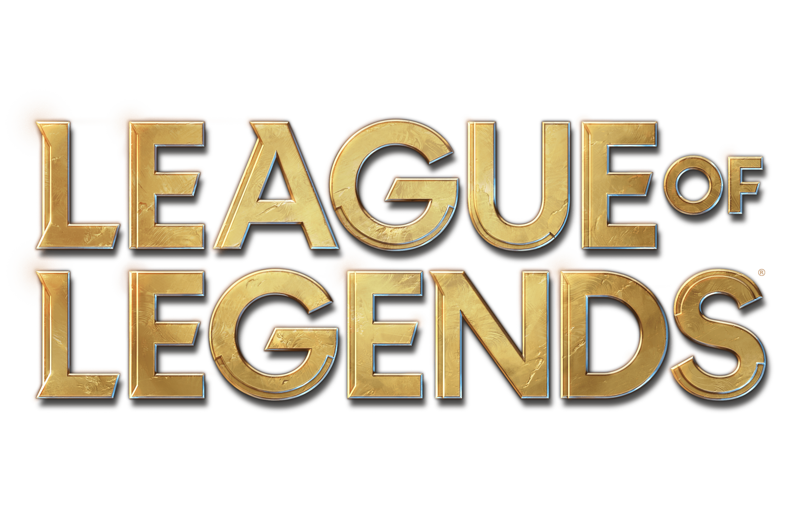

League of Legends
League of Legends (srp. Liga legendi; poznata kao i LoL) je višekorisnička onlajn borbena arena koju je razvila i izdala kompanija Riot Games za Windows i MacOS. Igra koristi Frimium (eng. Freemium) model i podržana je mikrotransakcijama, inspirisana igrama kao što su Warcraft III: The Frozen Throne i Defense of the Ancients.
U LoL-u, igrači preuzimaju ulogu nevidljivog "prizivača" koji kontroliše "heroja" sa jedinstvenim magijama i bore se protiv tima drugih igrača ili kompjuterski upravljanim herojima. Cilj je obično da se uništi protivnički "Nexus", konstrukcija koja se nalazi u srži baze zaštićena odbrambenim strukturama, iako postoje i drugi režimi igre. Svaki LoL meč je diskretan, gde svi heroji počinju igru poprilično slabi, ali povećavaju snagu tako što stiču stvari i Iskustvo kroz tok igre.
LoL je bila generalno dobro prihvaćena igra po njenom izdanju, i od tada je sve više postojala popularnija, sa aktivnom i rastućom bazom igrača. Do jula 2012, LoL je postala najigranija PC igra u Severnoj Americi i Evropi po ukupno odigranim satima.
Od januara 2014, preko 67 miliona ljudi je igralo LoL po mesecu, 27 miliona po danu, i preko 7.5 miliona u peak satima. 'Liga' ima najveći otisak ostavljen od svih ostalih igara striming igara na platformama poput YouTube i Twitch.tv, rutinski završava prva u satima najveće gledanosti.
U septembru 2016 kompanija je procenila da ima oko 100 miliona aktivnih igrača svakog meseca. Popularnost je dovela do njene ekspanzije u robu poput igračaka, pribora, odeće i takođe konekcija sa drugim medijima kroz muzičke spotove, web serije, dokumentarce i knjige.

LoL ima aktivnu i prostranu takmičarsku scenu. U Severnoj Americi i Evropi, Riot Games organizuje League Championship Series (LCS), lociran u Los Anđelesu i Berlinu za Evropu, koji se sadrži od 10 profesionalnih timova za svaki kontinent. Slična regionalna takmičenja postoje u Kini (LPL), Južnoj Koreji (LCK), Tajvanu (LMS), Jugoistočnoj Aziji (GPL), i u raznim drugim regionima. Ova regionalna takmičenja dostižu u jednogodišnje Svetsko prvenstvo. Svetsko prvenstvo 2016 je imalo 43 miliona unikatnih gledalaca i nagradni fond od preko 6 miliona dolara.